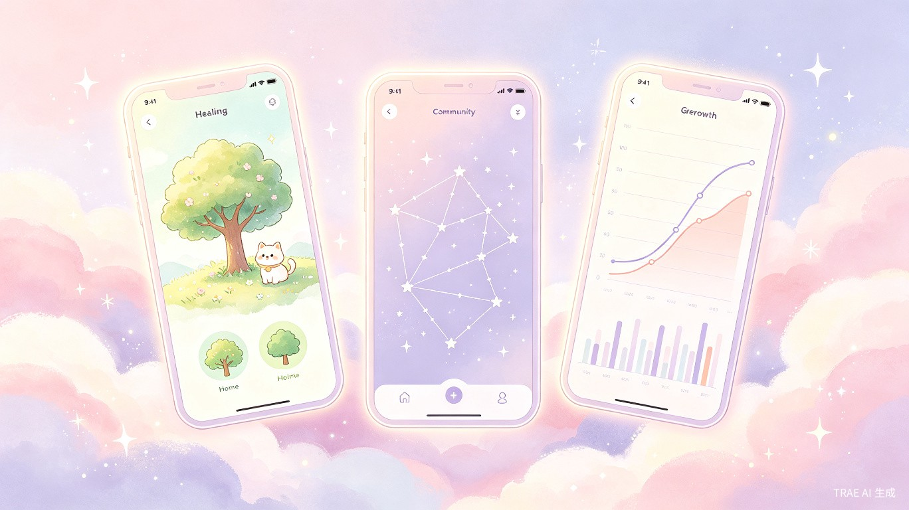
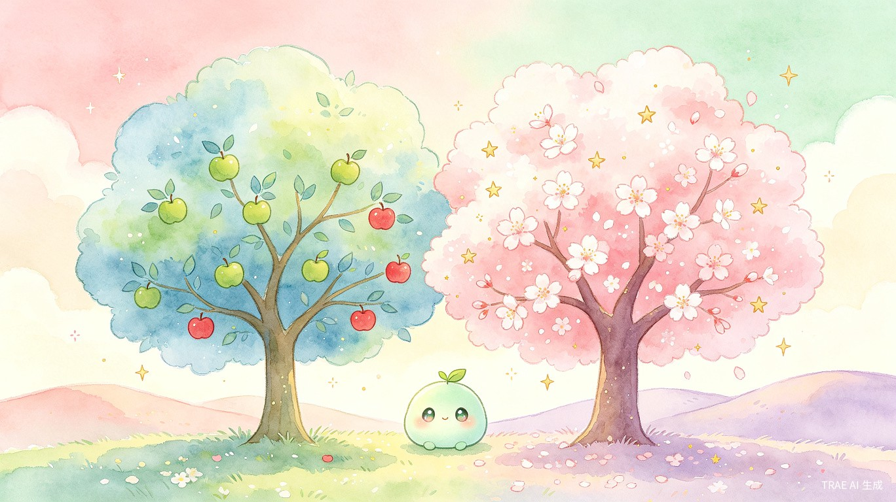
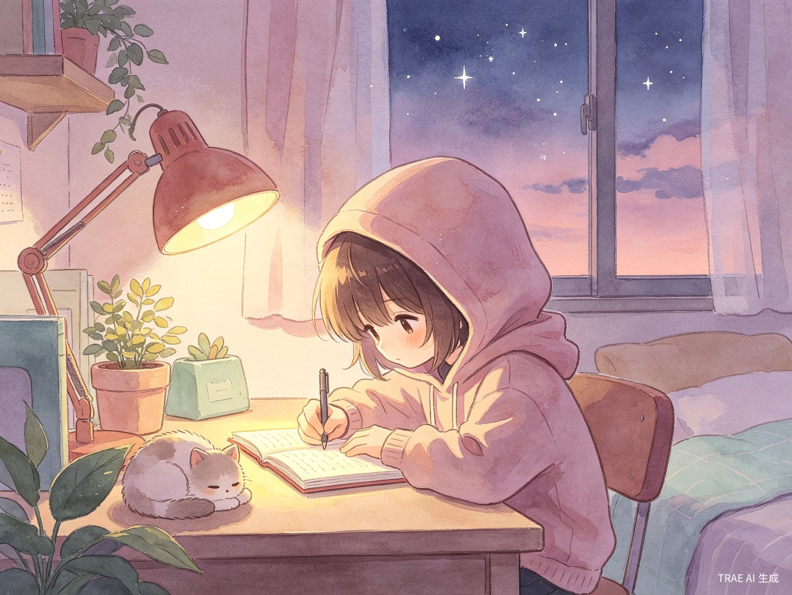

双树心境 · 项目总结
一款将心理学藏进养成游戏的跨终端情绪成长平台
01 Demo 简介
一句话定义：一款轻量化、跨终端的情绪养成类轻游戏 + 心理健康工具。
产品形态
双树心境同时以 手机 App、微信小程序 / 抖音小程序、桌面 / 车机 / 机器人 Agent 插件 三种形态存在。用户可以在通勤课间用手机随手记录，睡前用 App 完整复盘，工作间隙通过电脑悬浮窗快速倾诉，驾驶时由车机 Agent 守护情绪——同一个宠物，在所有终端同步成长。

核心用户
12-22 岁青少年
学业竞争、社交困惑、成长迷茫，心智尚未成熟，抵触传统心理干预。
20-35 岁职场青年
内卷加班、生活压力、家庭责任叠加，情绪无处释放，没时间做专业调节。
情绪敏感人群
有轻微内耗与压力，但不愿承认问题、不愿主动就医的普通年轻人。
三大核心功能
🌳🌸 双树记录与收获系统
每月一棵烦恼树 + 一棵开心树。烦恼记录必须包含时间、地点、事件、感受四要素，生成青苹果；化解后变红苹果。开心记录分五类（小事喜悦 / 自我突破 / 收获成长 / 被善待 / 完成新事），开出花朵。同时间段烦恼进入匿名互助池，实现无压力社交。每月收获的果实存入心境庄园，12 个月形成年度情绪档案。


◐ 三阶段宠物成长与情绪喂养
宠物不是一步到位，而是与用户共同成长的「心理镜像」。萌芽期识别高频情绪词；幼年期接入日程商定计划；成熟期给出范式突破建议与主动疏导。用户用情绪喂养宠物，生成 #温柔 #勇敢 #好奇 #创造 等人格标签，最终宠物进化为独属用户的跨端 Agent。

🤖 专属 Agent 与跨终端同步
宠物根据用户一年情绪档案生成个性化日 / 周 / 成长计划，自动同步到手机、平板、电脑、新能源汽车、家用机器人。用户无需切换不同 AI 助手，同一个情绪 Agent 贯穿所有生活场景。宠物活力与任务完成度挂钩，未完成则饥饿虚弱——用游戏化机制温和倒逼自律。
02 Demo 创作思路
灵感来源
市面上的心理 App 充斥着「抑郁」「焦虑」「障碍」等冰冷词汇，用户看到就抵触；而养成游戏却让人愿意每天打开、持续投入。我们想到——把心理学藏进养成游戏里，让用户在种树、养宠、收星星的过程中，无意识地完成情绪察觉与疏导。烦恼树和开心树的设计灵感来自「每一个问题都是一颗苹果」——青苹果代表未化解的课题，红苹果代表成长后的收获，把负面情绪转化为可视化的成长证据。
想解决的问题
❶ 情绪认知缺失
年轻人分不清「正常烦躁」和「情绪积压」，任由压力隐性累积，最终演变为不可逆的心理问题。
❷ 疏导无方法
没有简单可落地的解压方式，负面情绪只能压抑、刷手机、熬夜，越压越重。
❸ 心理抵触
大众对心理咨询有羞耻感，拒绝「心理疾病」标签，宁愿硬扛也不主动干预。
❹ 无人共鸣
烦恼无处倾诉，身边无同频好友，孤独内耗，独自承受所有压力。
为什么做这个方向
市场空白：传统心理 App 过于严肃枯燥，自律工具缺乏情绪关怀，单一解压游戏没有长期价值。双树心境首创 「情绪预防 + 游戏养成 + 专业心理 + 社区互助 + AI 私教」 五位一体模式，填补市场空白。
刚需高频：情绪压力是当代年轻人永久刚需。覆盖青少年 + 职场青年两大海量群体，用户留存率极高。
社会价值：将晦涩心理学知识大众化、日常化、趣味化，从源头降低青少年心理问题发生率，缓解社会精神内耗。
技术可行：前端 SVG + 本地存储即可实现核心玩法闭环；AI 心理疏导可接入持证咨询师训练的 LLM；跨端 Agent 通过统一账号体系同步。
03 核心玩法与系统架构
双树闭环：从记录到收获
| 环节 | 烦恼树 | 开心树 |
|---|---|---|
| 记录 | 时间+地点+事件+感受 → 青苹果 | 五类开心事 → 花朵 |
| 化解 | 点击「想开了」→ 青变红 +1 勇气星 | — |
| 互助 | 同时间段进入匿名池，鼓励他人 +1 美好星 | — |
| 收获 | 红苹果存入庄园 | 花朵存入庄园 |
| 月度 | 月底一键收获，生成月度情绪报告 | |
宠物三阶段成长体系
🥚 萌芽期 · 情绪镜子
解锁：30 美好星 + 12 勇气星
能力：识别高频情绪词，主动提醒用户注意情绪倾向。
示例：「最近你提到的『担心』有点多，它们结了好多酸苹果呀」
🌿 幼年期 · 计划管家
升级：+30 毅力星
能力：接入日程，商定小目标，智能分配每日时段。
喂养：每 3 天消耗 1 毅力星，否则虚弱
✨ 成熟期 · 心灵教练
升级：+50 勇气星
能力：范式突破（识别旧模式提示新选择）+ 主动疏导（低谷时生成呼吸引导）+ 深度 AI 疏导。
喂养：每 5 天消耗 1 毅力星；深度疏导消耗 2 美好 + 1 勇气
技术架构
| 层级 | 技术选型 | 职责 |
|---|---|---|
| 表现层 | SVG + CSS Animation / Lottie | 双树生长动画、宠物骨骼动画、花朵/苹果交互 |
| 多端适配 | Taro / uni-app + React Native | App、小程序、桌面 Agent 一码三端 |
| 业务层 | TypeScript State Machine | 双树状态机、星星账本、任务推送引擎 |
| 智能层 | 持证咨询师训练 LLM + RAG | AI 心理疏导、宠物个性化对话、知识库问答 |
| 数据层 | IndexedDB + PostgreSQL + Redis | 本地离线记录 + 云端年度档案 + 社区池 |
三类星星体系
🌸 美好星 Joy
来自开心记录、社区互助。代表看见快乐的能力。
🍎 勇气星 Courage
来自青苹果化解、寻求疏导。代表直面困扰的勇气。
🌿 毅力星 Grit
来自解压任务打卡、连续坚持。代表滋养自律的毅力。
04 经验总结与迭代方向
核心经验
❶ 游戏化是降低心理门槛的最有效方式。用户抵触「抑郁」「焦虑」等标签，但完全不抵触「种一棵烦恼树」「收获一颗红苹果」。用可视化成长替代病理化标签，让用户在无意识中完成情绪管理。
❷ 情绪可视化带来即时正反馈。青苹果变红苹果、花朵开满枝头、星星飞起动画——这些即时视觉反馈让用户立刻感知到「我在成长」，远比传统心理工具的周/月报告更有动力。
❸ 宠物饥饿机制是温柔且有效的自律约束。不用惩罚、不用苛责，只用「宠物饿了就不能帮你规划了」这种情感绑定，比任何打卡提醒都更能促使用户坚持。
❹ 跨端 Agent 是未来的必然趋势。用户不需要在手机上养一个宠物、车机上换另一个助手。同一个情绪 Agent 贯穿所有终端，才是「陪伴」的真正含义。
迭代方向
接入真实 AI 心理模型
与持证心理咨询师合作，训练专用于情绪疏导的轻量 LLM，确保 AI 回复的专业性与安全性。
医院心理科合作
联合公立医院心理科上架非诊断类自评量表，建立分级引导机制，重度用户温和转介线下就医。
多终端 SDK 开放
将宠物 Agent 封装为跨平台 SDK，供车机厂商、智能家居、教育平板快速接入，扩大生态覆盖。
情绪数据价值化
在严格匿名脱敏前提下，汇聚群体情绪趋势数据，为学校、企业提供心理健康预警与干预建议。